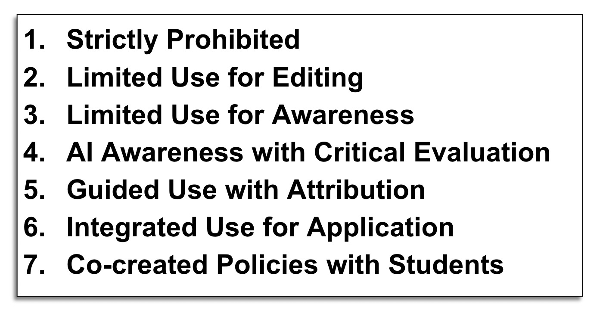
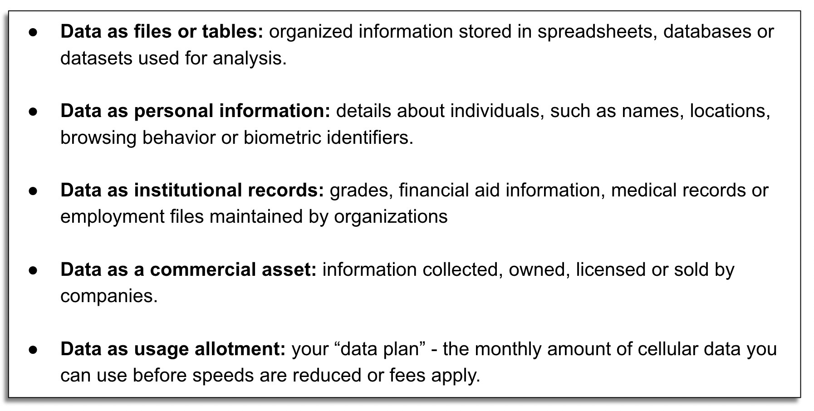
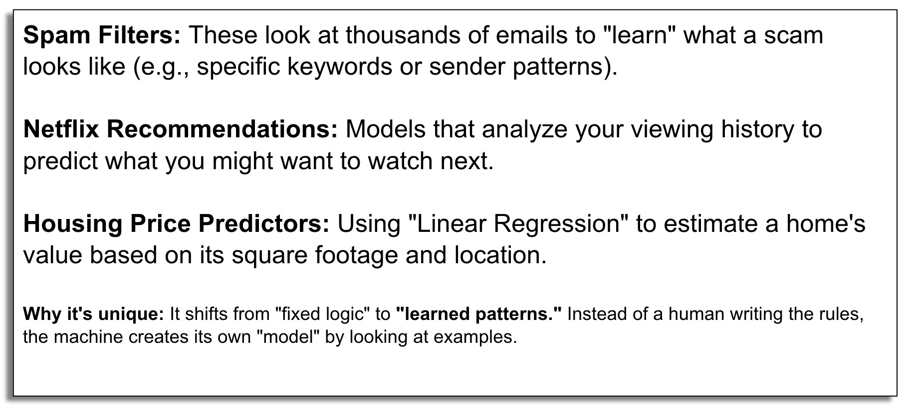
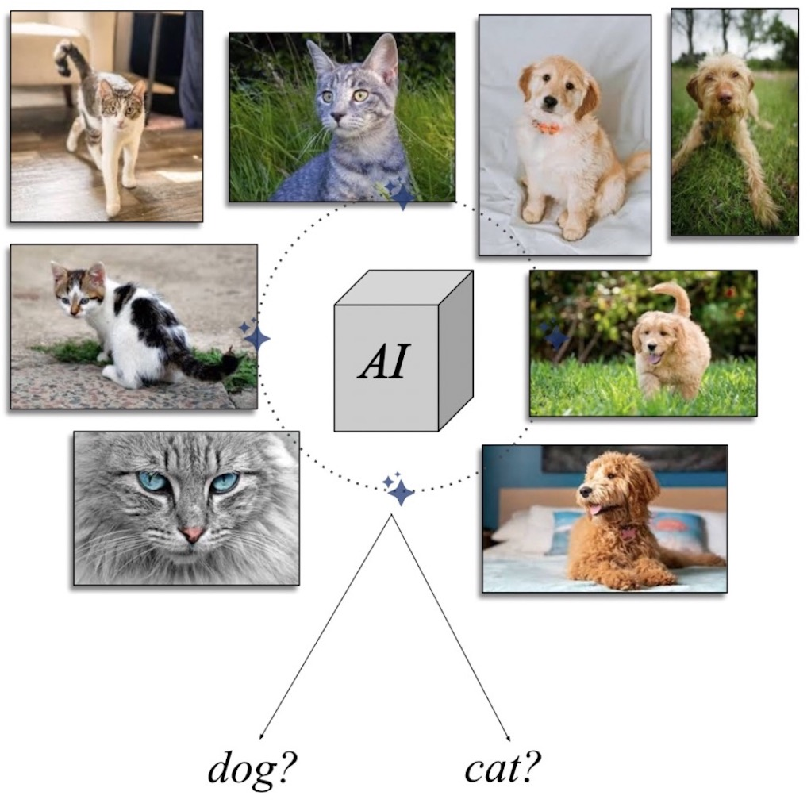
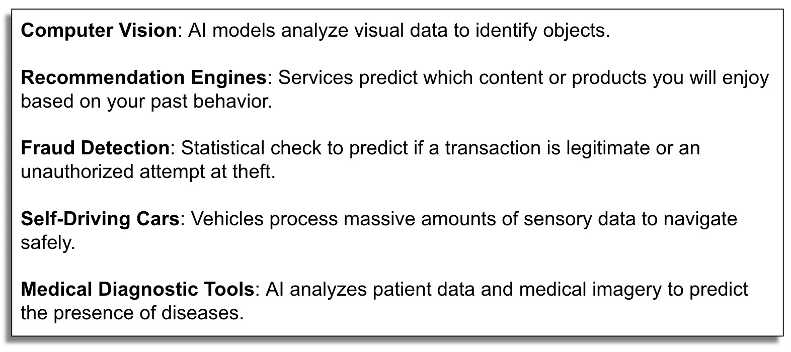

Session 1: What is AI?
AI in the Public Eye
AI is a transformational technology and one of the most heated topics in public life. People encounter it through wildly diverging claims – utopian promises on one side, existential warnings on the other.

AI as a Polarizing Conversation Topic
Public conversations about AI are often shaped by heated claims from prominent technology leaders and social media discussions. 
Context – Citizen, Instructor, Librarian
A crucial component of college education is the mastery of context - understanding diverse perspectives while evaluating viewpoints.

“The Purpose of College Education”
Higher education has traditionally been understood as a space for emphasizing intellectual development and critical thinking. At the same time, college is increasingly viewed as a pathway to employment. Discussion of AI can manifest tension between these two views.

AI and the Liberal Arts Tradition
Can AI be integrated in ways that support a traditional liberal arts education?

Baruch College’s AI Policy
Baruch College’s policies on AI reflect that there is no single, universally agreed-upon stance on the technology.

What is “AI”?
Understanding AI begins with clarifying terms that seem familiar but carry different meanings in different contexts.

“What is Data?” and the Challenge of Understanding Technology
Just as “data” has many meanings, “AI” is often treated as a single technology when it actually refers to many different systems and practices.

The AI Nesting Circles
AI is commonly visualized as a set of nested circles, showing that “Artificial Intelligence” is not one single technology but a broad field with layers of specialization. 
Artificial Intelligence – The Outer Circle
At its broadest level, “Artificial Intelligence” refers to any approach that enables computers to perform tasks that would normally require human intelligence. AI is not a single technology but an umbrella term encompassing many different techniques developed over decades.

Machine Learning
Machine learning is a subset of AI in which systems learn patterns from data rather than following explicitly programmed rules. 
Deep Learning and Neural Networks
Deep learning emerges as a response to the limitations of traditional machine learning when problems become extremely complex.

From Simple Models to Complex Ones
For decades, computing has excelled at solving models of low mathematical complexity, like predicting GPA from hours studied using a single transparent line. But real-world problems rarely depend on a single variable, more powerful techniques become necessary to capture the complexity of phenomena like language and behavior.

Generative AI
Generative AI refers to systems designed not just to analyze or predict outcomes, but to produce new content such as text, images, audio, or code. These models generate responses by predicting what is likely to come next in a given context - they do not retrieve stored answers or “understand” meaning.

Examples of Generative AI
This workshop focuses specifically on generative AI tools that produce written language. These text-generating tools raise important questions about reliability, authority, and responsible use.

AI as a Prediction Machine
AI is best understood as a “prediction machine” - its outputs are not the result of understanding or reasoning, but of statistical prediction based on patterns learned from data. A system trained only on images of dogs and cats will be forced to label a pig as one or the other, revealing the boundaries of its training rather than independent reasoning.

“Hallucinations” and Training Boundaries
When an AI system encounters input outside its training categories, it still produces a confident prediction - this is what is often called a hallucination. The AI is not making things up intentionally - it is doing exactly what it was designed to do. Expanding the training data (adding pigs and horses) increases the system’s range but does not grant general knowledge or awareness.

AI Across Domains
Prediction-based AI models now power computer vision, recommendation engines, fraud detection, self-driving cars, and medical diagnostic tools. However, this workshop focuses on AI systems that operate on language - systems that read, summarize, generate, and respond to text - because they most directly shape how students and researchers write, study, and evaluate information.

OpenAI Strategic Framework
This white paper from OpenAI allows us to analyze AI’s impact on campus through specific lenses of “Content Creation”, “Research” and “Ideation.”

Predicting Words and Language
Like Mr. Burns’ room of monkeys typing on typewriters in The Simpsons, language models do not understand meaning or intention - they produce sequences of symbols. What separates an LLM from random generation is statistical guidance - at every step, the model predicts which word is most likely to come next, keeping output coherent without any underlying understanding.
From Prediction Machines to Large Language Models
Large Language Models (LLMs) are deep learning models trained on vast amounts of text, designed to predict and generate human-like language. LLMs have become consequential on college campuses because academic life is fundamentally text-based - and when students can generate polished paragraphs instantly, it changes how writing is produced, knowledge is evaluated, and learning is assessed.